<title>Energy Budget Mood Board</title>
<meta name="claude:viewport-fit-sides" content="cover">
<link rel="preconnect" href="https://fonts.googleapis.com">
<link rel="preconnect" href="https://fonts.gstatic.com" crossorigin>
<link rel="stylesheet" href="https://fonts.googleapis.com/css2?family=Bodoni+Moda:ital,opsz,wght@0,6..96,400;0,6..96,500;1,6..96,400&family=IBM+Plex+Sans:ital,wght@0,400;0,500;1,400&display=swap">
<style>
/* Layout: one ledger page; film frames down a single column, each followed by the rule it shows. Single light look on purpose: the page is the film's own paper. */
:root {
  --ground: #EEE6D2;
  --ground-deep: #DCCFB2;
  --ground-lift: #F7F2E6;
  --ink: #24211C;
  --pencil: #635D50;
  --cobalt: #2B56B0;
  --viridian: #1E8466;
  --vermilion: #C9452E;
  --rule: rgba(99, 93, 80, 0.32);
  --display: "Bodoni Moda", "Didot", "Bodoni 72", Georgia, serif;
  --text: "IBM Plex Sans", "Helvetica Neue", Arial, sans-serif;
  color-scheme: light;
}
* { box-sizing: border-box; }
body {
  margin: 0;
  background: radial-gradient(ellipse 120% 70% at 50% 30%, var(--ground) 0%, var(--ground) 55%, var(--ground-deep) 100%) fixed, var(--ground);
  color: var(--ink);
  font: 400 18px/1.6 var(--text);
}
.page {
  max-width: 1180px;
  margin: 0 auto;
  padding-block: 72px 120px;
  padding-left: max(16px, env(safe-area-inset-left, 0px));
  padding-right: max(16px, env(safe-area-inset-right, 0px));
  display: grid;
  gap: 96px;
}
h1, h2, h3 { font-family: var(--display); font-weight: 400; text-wrap: balance; margin: 0; }
h1 { font-size: clamp(48px, 8vw, 104px); line-height: 1.02; letter-spacing: -0.01em; }
h2 { font-size: clamp(32px, 4.4vw, 52px); line-height: 1.08; }
h3 { font-size: 26px; line-height: 1.2; }
p { margin: 0; max-width: 66ch; }
.lead { font-size: 21px; color: var(--pencil); }
.muted { color: var(--pencil); }
section { display: grid; gap: 28px; min-width: 0; }
figure { margin: 0; display: grid; gap: 12px; min-width: 0; }
figure img, figure video { width: 100%; max-width: 100%; height: auto; display: block; aspect-ratio: 16 / 9; border-radius: 2px; background: var(--ground-deep); box-shadow: 0 0 0 1px var(--rule); }
figcaption { font-size: 15px; color: var(--pencil); max-width: 70ch; }
.eyebrow { font-size: 13px; letter-spacing: 0.12em; text-transform: uppercase; color: var(--pencil); }
.frames { display: grid; grid-template-columns: repeat(2, minmax(0, 1fr)); gap: 40px 32px; }
.inks { display: grid; grid-template-columns: repeat(4, minmax(0, 1fr)); border-top: 1px solid var(--rule); }
.ink { padding: 18px 16px 22px 0; border-bottom: 1px solid var(--rule); display: grid; gap: 10px; align-content: start; min-width: 0; }
.chip { height: 72px; border-radius: 1px; box-shadow: inset 0 0 0 1px var(--rule); }
.ink b { font-weight: 500; font-size: 17px; }
.ink code { font: 400 14px/1.4 var(--text); color: var(--pencil); font-variant-numeric: tabular-nums; }
.ink span { font-size: 15px; color: var(--pencil); }
.types { display: grid; grid-template-columns: repeat(3, minmax(0, 1fr)); gap: 32px; }
.type { display: grid; gap: 12px; align-content: start; border-top: 1px solid var(--rule); padding-top: 18px; min-width: 0; }
.specimen-display { font-family: var(--display); font-size: 44px; line-height: 1.05; }
.specimen-text { font-family: var(--text); font-size: 28px; line-height: 1.25; }
.frac { display: inline-flex; flex-direction: column; align-items: center; font-family: var(--display); color: var(--cobalt); font-size: 60px; line-height: 1; vertical-align: middle; margin-left: 18px; }
.frac i { display: block; width: 100%; min-width: 40px; height: 2px; background: var(--cobalt); margin: 4px 0; }
.scale { display: flex; flex-wrap: wrap; align-items: baseline; gap: 6px 22px; color: var(--pencil); font-variant-numeric: tabular-nums; }
/* The rules list is itself a ledger: label, then what it means, on ruled lines. */
.ledger { list-style: none; margin: 0; padding: 0; border-top: 2px solid var(--pencil); }
.ledger li { display: grid; grid-template-columns: minmax(0, 15rem) minmax(0, 1fr); gap: 8px 32px; padding: 14px 0; border-bottom: 1px solid var(--rule); }
.ledger li strong { font-weight: 500; }
.ledger li span { color: var(--pencil); font-size: 16px; }
.weights { display: grid; grid-template-columns: repeat(4, minmax(0, 1fr)); gap: 24px; }
.weight { display: grid; gap: 10px; min-width: 0; }
.weight svg { width: 100%; height: 56px; display: block; }
.weight b { font-weight: 500; font-size: 16px; }
.weight span { font-size: 14px; color: var(--pencil); font-variant-numeric: tabular-nums; }
.tags { display: flex; flex-wrap: wrap; gap: 14px 28px; font-size: 16px; color: var(--pencil); }
.tag { display: inline-flex; align-items: center; gap: 10px; }
.tag::before { content: ""; width: 9px; height: 9px; border: 2px solid; border-radius: 50%; }
.tag.computed::before { border-color: var(--viridian); background: var(--viridian); }
.tag.schematic::before { border-color: var(--pencil); border-radius: 0; transform: rotate(45deg); }
.tag.claim::before { border-color: var(--cobalt); }
.acts { display: grid; grid-template-columns: repeat(4, minmax(0, 1fr)); gap: 24px; }
.act { border-top: 2px solid var(--ink); padding-top: 14px; display: grid; gap: 6px; align-content: start; min-width: 0; }
.act h3 { font-size: 24px; }
.act p { font-size: 15px; color: var(--pencil); }
.act .time { font-size: 14px; color: var(--pencil); font-variant-numeric: tabular-nums; letter-spacing: 0.04em; }
a { color: var(--cobalt); }
a:focus-visible { outline: 2px solid var(--cobalt); outline-offset: 3px; }
@media (max-width: 860px) {
  .frames, .types, .acts { grid-template-columns: minmax(0, 1fr); }
  .inks, .weights { grid-template-columns: repeat(2, minmax(0, 1fr)); }
  .ledger li { grid-template-columns: minmax(0, 1fr); }
}
@media (prefers-reduced-motion: reduce) { video { display: none; } .reduced-still { display: block !important; } }
</style>

<main class="page">
  <header style="display:grid;gap:28px">
    <p class="eyebrow">Mood board · a second explainer in the Quasi-Riemann series</p>
    <h1>The energy budget</h1>
    <p class="lead">A twenty-minute film about one estimate: the mean square that the October manuscript's proof of 11/12 rests on. Every frame below was rendered by the film's own components from the tokens on this page; a lint step rejects any color or typeface that is not listed here.</p>
    <figure>
      <video src="frames/MoodTitle.mp4" poster="frames/MoodTitle.jpg" autoplay muted loop playsinline aria-label="Title card animation: the computed family inked in from the centre outward"></video>
      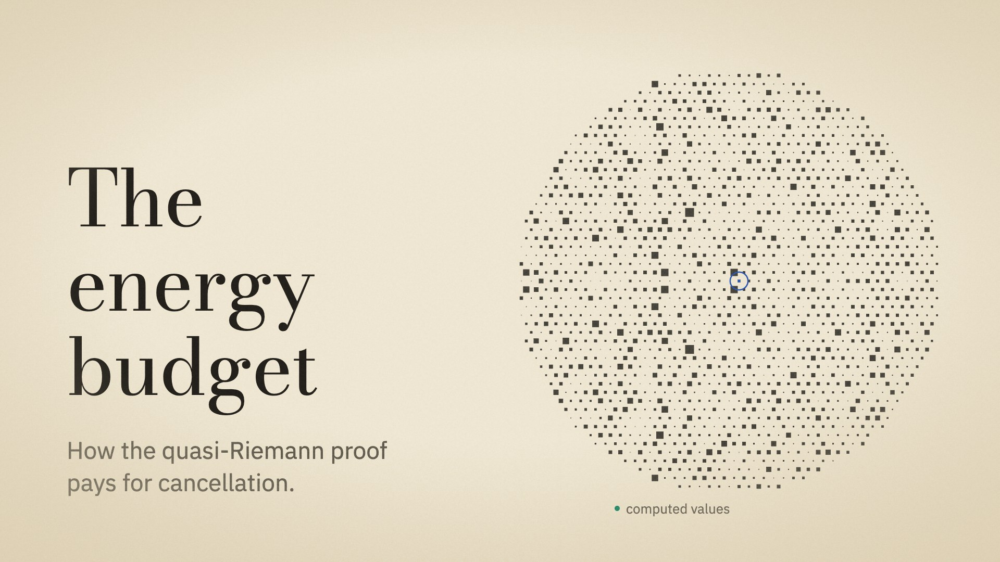
      <figcaption>Title card. The disk is the real family A<sub>u</sub>(D) at D = 2000: each of its rows sits on its Eisenstein lattice point as a square whose side is |A<sub>u</sub>(D)|. The row u = 1, the target, is the one cobalt square at the centre.</figcaption>
    </figure>
  </header>

  <section>
    <h2>An account book</h2>
    <p>The first film printed in cyanotype, a survey of the critical strip. This one is kept in a ledger. An energy budget is an account: a promise about a total, entries that spend it, debts that have to be returned. So the film is inked on buff ledger paper, with the conventions of an account book. Totals are double-ruled, debts are written in red, and the figures sit right-aligned in a money column.</p>
    <p class="muted">The palette changes; the system does not. Type, sizes, margins, the bottom band, the figure tags, source citations and the motion vocabulary all carry over from <em>The Fixed Frontier</em>, so the two films read as one series.</p>
  </section>

  <section>
    <h2>Inks</h2>
    <p class="muted">Three grounds, two neutral inks and three accents. Each accent has one job for the whole film. Energy itself gets no colour of its own: it is drawn as area, in ink.</p>
    <div class="inks">
      <div class="ink"><div class="chip" style="background:var(--ground)"></div><b>Ground</b><code>#EEE6D2</code><span>Buff ledger paper, the page of every frame.</span></div>
      <div class="ink"><div class="chip" style="background:var(--ground-deep)"></div><b>Aged edge</b><code>#DCCFB2</code><span>The vignette: paper darkens toward its edges.</span></div>
      <div class="ink"><div class="chip" style="background:var(--ground-lift)"></div><b>Fresh sheet</b><code>#F7F2E6</code><span>Anything that must sit forward.</span></div>
      <div class="ink"><div class="chip" style="background:var(--ink)"></div><b>Iron-gall ink</b><code>#24211C</code><span>Primary ink: text, geometry, the squares of an energy.</span></div>
      <div class="ink"><div class="chip" style="background:var(--pencil)"></div><b>Pencil</b><code>#635D50</code><span>Axes, ledger rules, captions, citations.</span></div>
      <div class="ink"><div class="chip" style="background:var(--cobalt)"></div><b>Cobalt</b><code>#2B56B0</code><span>The target and the claim: A<sub>1</sub>(D), 11/12, the budget line.</span></div>
      <div class="ink"><div class="chip" style="background:var(--viridian)"></div><b>Viridian</b><code>#1E8466</code><span>Arithmetic: primes, characters, Gauss sums, Möbius signs.</span></div>
      <div class="ink"><div class="chip" style="background:var(--vermilion)"></div><b>Red ink</b><code>#C9452E</code><span>Debt and obstruction: errors, borrowed terms, overspend.</span></div>
    </div>
    <p class="muted">The accents were checked with a palette validator against the ground, over all three pairs and under simulated colour-blindness: worst deuteranope separation ΔE 9.8 (target 8), worst normal-vision separation ΔE 20.3, every accent above 3:1 contrast. Pencil is 5.3:1 on the ground, so captions stay readable at 26 px.</p>
  </section>

  <section>
    <h2>Type</h2>
    <div class="types">
      <div class="type">
        <h3>Bodoni Moda</h3>
        <div class="specimen-display">Spending it <span class="frac">11<i></i>12</span></div>
        <p class="muted">Titles, and the few fractions the story is about, stacked.</p>
      </div>
      <div class="type">
        <h3>IBM Plex Sans</h3>
        <div class="specimen-text">kept: J copies of the target</div>
        <p class="muted">Everything read: labels, captions, ledger entries, tabular figures.</p>
      </div>
      <div class="type">
        <h3>KaTeX</h3>
        <figure>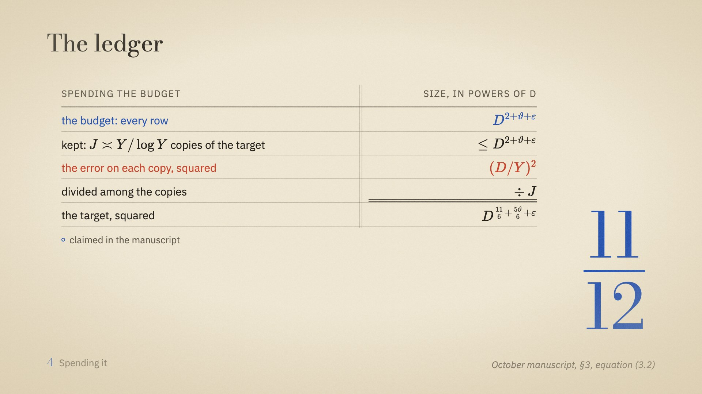</figure>
        <p class="muted">All mathematics is typeset, including the amounts in the ledger's money column.</p>
      </div>
    </div>
    <div class="scale" aria-label="Type scale in pixels at 1080p">
      <span>Scale at 1080p:</span><span>22</span><span>26</span><span>30</span><span>38</span><span>46</span><span>64</span><span>96</span><span>150</span>
    </div>
  </section>

  <section>
    <h2>The energy grammar</h2>
    <p>Energy is area. A number of size s is a square of side s; an energy is the total area of its squares; a budget is a frame they must fit inside. This is exact, not decorative, so the same picture works in every chapter: walks become squares, a family becomes a field of squares, spending lifts copies out of the frame, and the proof reflects and shrinks rectangles of rows by columns.</p>
    <div class="weights" aria-label="Stroke weights">
      <div class="weight"><svg viewBox="0 0 200 56" aria-hidden="true"><line x1="0" y1="28" x2="200" y2="28" stroke="#635D50" stroke-width="1.5" opacity="0.6"/></svg><b>Ledger rule</b><span>hair, 1.5 px, pencil</span></div>
      <div class="weight"><svg viewBox="0 0 200 56" aria-hidden="true"><rect x="70" y="6" width="44" height="44" fill="none" stroke="#24211C" stroke-width="2.5"/></svg><b>A square</b><span>line, 2.5 px, ink</span></div>
      <div class="weight"><svg viewBox="0 0 200 56" aria-hidden="true"><rect x="10" y="6" width="180" height="44" fill="none" stroke="#24211C" stroke-width="4"/></svg><b>A frame</b><span>bold, 4 px: a budget's boundary</span></div>
      <div class="weight"><svg viewBox="0 0 200 56" aria-hidden="true"><line x1="0" y1="28" x2="200" y2="28" stroke="#2B56B0" stroke-width="5"/></svg><b>The budget line</b><span>5 px, the heaviest stroke</span></div>
    </div>
    <div class="frames">
      <figure>
        <video src="frames/MoodArea.mp4" poster="frames/MoodArea.jpg" autoplay muted loop playsinline aria-label="Random walks become squares, which are poured into a frame"></video>
        <figcaption>Energy is area. Three computed ±1 walks; each walk's end S becomes a square of side |S|; the squares are poured, area for area, into a frame of area N per walk.</figcaption>
      </figure>
      <figure>
        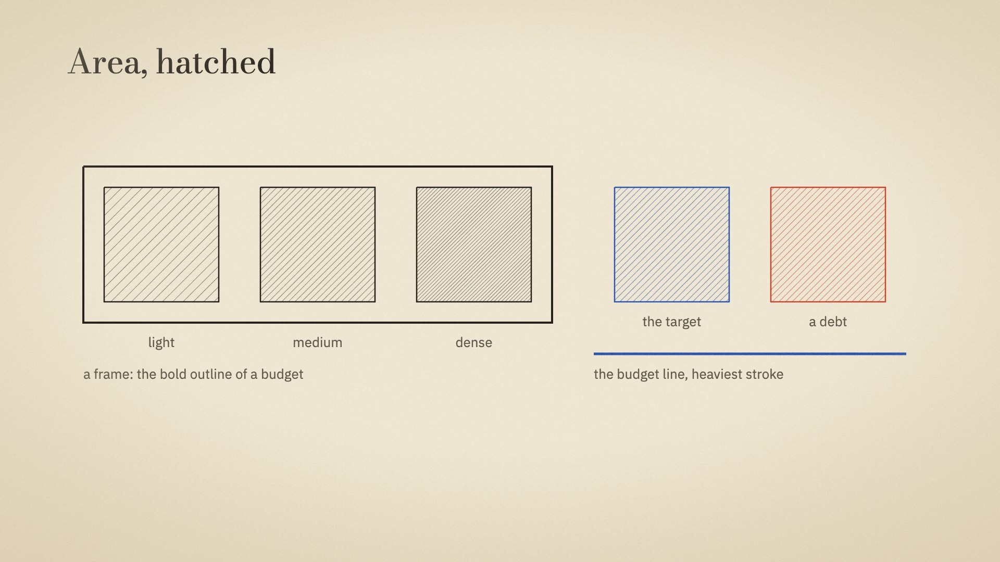
        <figcaption>Area is hatched, and density carries magnitude, never a new colour. A cobalt square is the target; a red one is a debt. The bold outline is a budget.</figcaption>
      </figure>
    </div>
  </section>

  <section>
    <h2>Diagram vocabulary</h2>
    <div class="frames">
      <figure>
        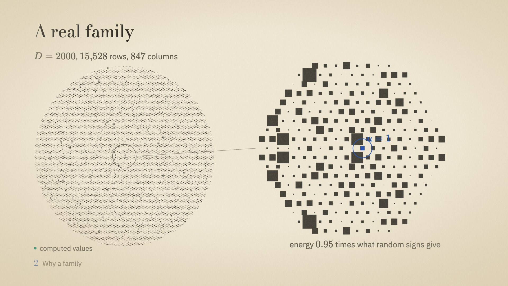
        <figcaption>The family, computed: 15,528 rows by 847 columns at D = 2000. No row stands out, and the energy is 0.95 times what random signs would give. At this scale it tests nothing about the paper's claim, and the film says so.</figcaption>
      </figure>
      <figure>
        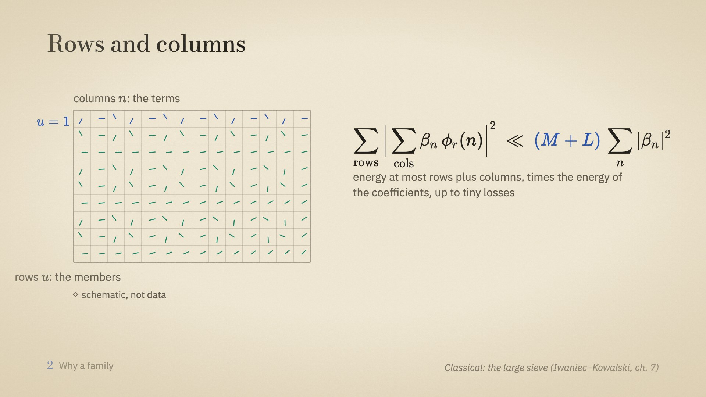
        <figcaption>Rows and columns, the paper's own words. The first row (u = 1) is the target in cobalt; the phases in the other cells are arithmetic, in viridian. The law beside it is the shape every budget in the film takes.</figcaption>
      </figure>
      <figure>
        <video src="frames/MoodReflect.mp4" poster="frames/MoodReflect.jpg" autoplay muted loop playsinline aria-label="An energy rectangle whose row side shrinks from H to script H"></video>
        <figcaption>The energy rectangle: rows tall, columns wide. Poisson summation reflects its row side through the column scale, H to 𝓗 = D²/H. Schematic, and tagged so.</figcaption>
      </figure>
      <figure>
        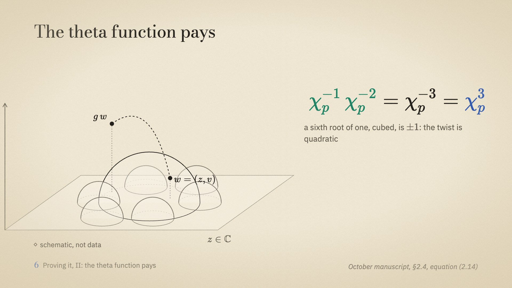
        <figcaption>The theta function on hyperbolic three-space, as a line sketch. Equations light term by term, cued to the narration: the two twists in viridian, the quadratic result in cobalt.</figcaption>
      </figure>
      <figure>
        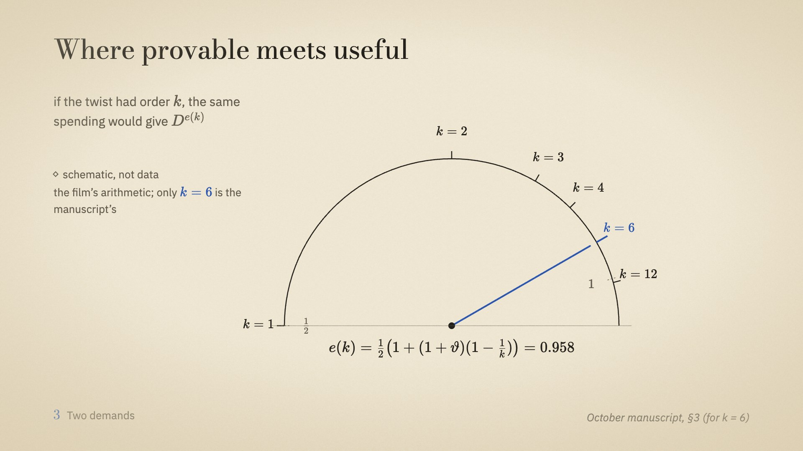
        <figcaption>The exponent dial. If the twist had order k, the same spending would give exponent e(k). Only k = 6, eleven twelfths plus five theta over twelve, is the manuscript's; the rest is the film's arithmetic and is tagged schematic.</figcaption>
      </figure>
      <figure>
        
        <figcaption>The ledger returns at the end of chapters: the budget in cobalt, debts in red, payments in ink, the total double-ruled. Lines and alignment only.</figcaption>
      </figure>
    </div>
  </section>

  <section>
    <h2>From the film</h2>
    <p class="muted">Frames from the finished scenes, taken from the film's own timeline. The board's grammar holds in practice: area carries energy, the ledger carries the argument, and cobalt is only ever the target.</p>
    <div class="frames">
      <figure>
        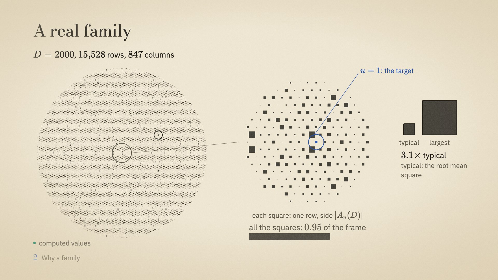
        <figcaption>Chapter 2, a real family. The largest row is 3.1 times the typical size, and all the squares together fill 0.95 of the frame that random signs would.</figcaption>
      </figure>
      <figure>
        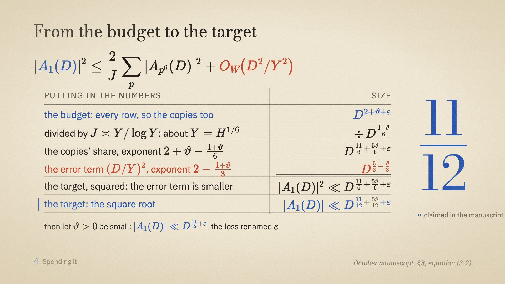
        <figcaption>Chapter 4, spending it. The chain from equation (3.2) entered line by line. The error term is in red, and the target's two rows are double-ruled.</figcaption>
      </figure>
      <figure>
        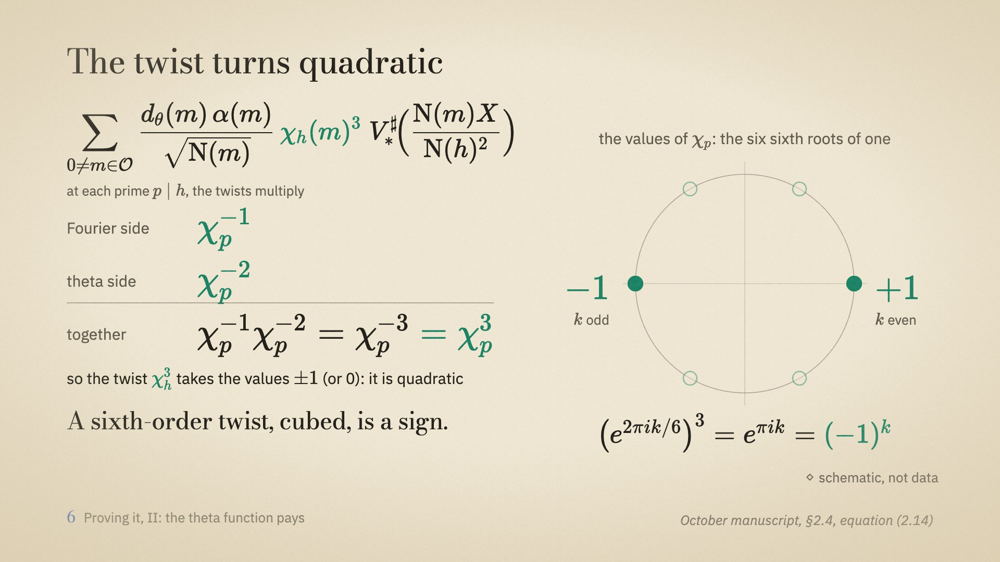
        <figcaption>Chapter 6, the twist turns quadratic. The six sixth roots of one, cubed, land on ±1.</figcaption>
      </figure>
      <figure>
        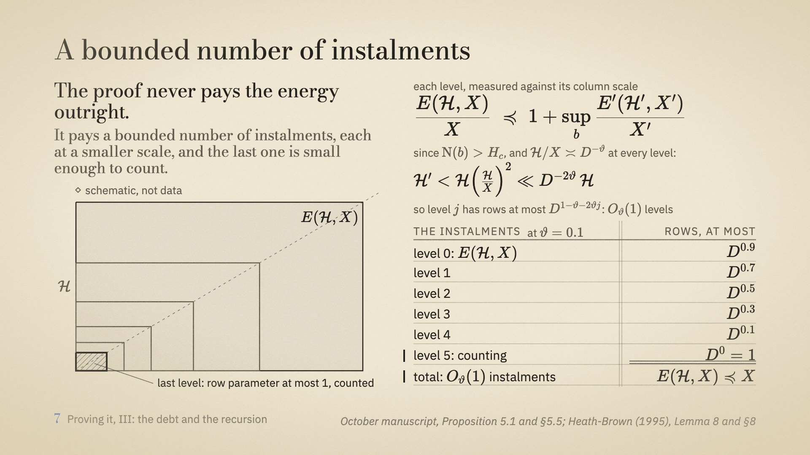
        <figcaption>Chapter 7, a bounded number of instalments. Similar rectangles on one diagonal, with row exponents at most 0.9, 0.7 and so on down to counting, at ϑ = 0.1.</figcaption>
      </figure>
    </div>
  </section>

  <section>
    <h2>Rules every frame follows</h2>
    <ul class="ledger">
      <li><strong>The bottom band is reserved</strong><span>Chapter locator at left, source citation at right. Nothing else goes there.</span></li>
      <li><strong>One title per scene</strong><span>Bodoni, top left, on the 128 px margin.</span></li>
      <li><strong>No boxes or cards</strong><span>Structure comes from rules, alignment, frames that mean budgets, and hatching that means area.</span></li>
      <li><strong>Every figure says what it is</strong><span>A tag beside it: computed values, schematic, or claimed in the manuscript.</span></li>
      <li><strong>Every claim names its source</strong><span>Paper and place, for example: October manuscript, §3, equation (3.2).</span></li>
      <li><strong>Colour means one thing</strong><span>Cobalt never decorates. If it appears, it is the target, the claim or the budget line.</span></li>
      <li><strong>Copies are never faked</strong><span>At computable scales the sixth-power rows lie outside the family. The film shows the copies directly, not inside the field.</span></li>
    </ul>
    <div class="tags"><span class="tag computed">computed values</span><span class="tag schematic">schematic, not data</span><span class="tag claim">claimed in the manuscript</span></div>
  </section>

  <section>
    <h2>Motion</h2>
    <ul class="ledger">
      <li><strong>Inked in</strong><span>Elements settle from a soft blur to a sharp line over 0.6 s, the way wet ink takes to paper.</span></li>
      <li><strong>Drawn strokes</strong><span>Lines draw on over 0.8 s; frames close around their contents.</span></li>
      <li><strong>Poured</strong><span>Squares move into a frame by area, strip by strip, so an energy is never shown by anything but its area.</span></li>
      <li><strong>Cued to the narration</strong><span>Each reveal is tied to a word in the ElevenLabs timestamps, not to a clock. Beats of 0.4 s, one easing family.</span></li>
    </ul>
  </section>

  <section>
    <h2>Shape of the film</h2>
    <p class="muted">About twenty minutes, narrated by Sarah. The spend comes before the proof, so viewers know what the budget buys before the three Poisson summations.</p>
    <div class="acts">
      <div class="act"><span class="time">1:30</span><h3>A thousand coins</h3><p>Square the ends of many random walks and the average settles at the number of steps: a fact about none of them and all of them.</p></div>
      <div class="act"><span class="time">about 7 min</span><h3>What it means</h3><p>Energy, the rows-and-columns law, Proposition 3.1, and the two demands a family must meet.</p></div>
      <div class="act"><span class="time">about 2 min</span><h3>Spending it</h3><p>Drop what you do not need, keep the copies, divide, take the root: eleven twelfths.</p></div>
      <div class="act"><span class="time">about 9 min</span><h3>Earning it</h3><p>Poisson to the dual side, the cubic theta function and the quadratic sieve, the cube debt and the shrinking recursion, and what theta costs.</p></div>
    </div>
  </section>
</main>
